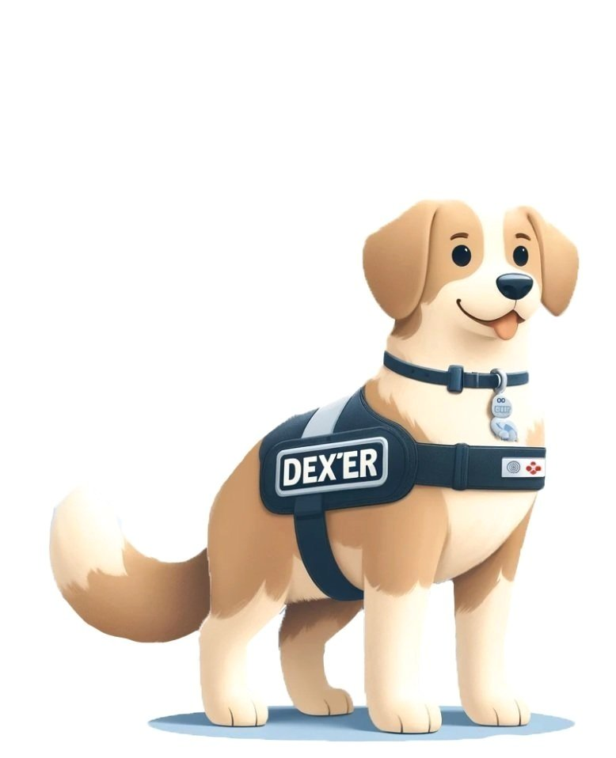

DEXTER
The focus of Dexter is to simplify mealtime management into one seamless app, where caregivers can access real-time glucose data, calculate insulin doses, build homemade recipes, save favorite meals, and track carbs with ease. With Dexter, we aim to restore peace of mind and bring back the joy of mealtime for families navigating type 1 diabetes.
Problem Statement
How might we streamline mealtime management for parents and caregivers of children who have type 1 diabetes?
Final Product
Challenge
- Create an innovative design experience of your choice in the healthcare technology track
- Solve a current problem in the healthcare field utilizing the main pillars of the design process including user research, persona formation, wireframing, prototyping, and usability testing
- Within six weeks develop a sound product demo and business pitch to share with a panel of judges to win money to further build out your team’s venture
User Research & Key insights
First, we conducted research to gain a better understanding of what pain points our potential users face pertaining to mealtime management and insulin dosage. We conducted a survey and received 25 responses in total. From the survey responses we received, our UX Researcher created an affinity map to best group similar needs and find key themes.
💡 Affinity Map
We asked: What are the primary challenges you face caring for a pediatric patient with type 1 diabetes?
The quotes above represented frequent sentiments in relation to caregiver’s experiences caring for pediatric patients with type 1 diabetes. A common sentiment and pain point among our survey participants was wondering if they are counting carbs correctly or if they are finding the correct amount of carbs for food items.
💡 Key Themes
- Caregiver Strain and Support Needs: Caregivers experience significant challenges such as burnout, stress, lack of sleep, and concerns about miscalculations. There is a strong desire for a supportive community of other caregivers.
- Need for Accessible, Personalized Information: Caregivers value having easy access to accurate, personalized information that is tailored to their child’s specific needs. They seek clear communication with doctors and tools for better managing aspects like trends and meal planning.
- Tools for Blood Glucose Management: Caregivers want solutions that help keep blood glucose levels in check, including tools for tracking insulin, real-time data sharing, and reminders for unhealthy glucose levels.
- Concerns Over Separation and Communication: Caregivers worry about their child’s well-being when they’re not together and appreciate tools that facilitate communication with both the child and other caregivers. They also want greater general awareness and education about T1D.
- Financial and Supply Challenges: Caregivers face financial burdens and accessibility issues related to the cost and availability of necessary medical supplies for managing T1D.
- Desire for Convenient Carb Counting Tools: Caregivers want an easy-to-use carb counting tool with a large, reliable database of foods to help them quickly find relevant information for managing their child’s diet.
Personas
After conducting our user research, we created a primary and secondary persona. Our primary persona, Susan, had needs that surrounded having an application that integrated CGM data in real time, had a database of new and frequently created meals, and carb counting/tracking to name a few. Our secondary persona, Austin, is Susan’s child who had frustrations and needs of his own. Austin struggles with his new diagnosis, adjusting to a different lifestyle, and managing the expectations his mother has for him and his health.
Competitive Analysis
In developing Dexter, we conducted a competitive analysis of three popular type 1 diabetes management apps:
- MySugr
- CalorieKing
- MyFitnessPal
While these apps offer helpful tools, none fully meet the complex needs of caregivers managing pediatric type 1 diabetes. We identified a gap: caregivers need a comprehensive tool that addresses all aspects of mealtime management. We created Dexter to be that solution.
Information Architecture
The sitemap was created to act as a guide of how we would lay out our app, and how our users would navigate through it. The sitemap also allowed us to prioritize our information architecture and determine which pages would be the most pertinent for our users.
User Flows
Wireframes
After gathering insights from users and identifying Dexter’s unique value add in terms of features, I started sketching frames that encompassed all new information we gained.
Design Solutions
- Recipe Builder and Food Logger: snap pictures of ingredients, input measurements, and allow Dexter to calculate the total carbs in any homemade meal.
- Extensive Food Database for Accurate Carb Counting: includes a comprehensive food database, covering restaurant items, fast food, and store-bought products.
- Simplified Insulin Dosage Calculator: For mealtime dosing, caregivers can easily add the meal’s carbohydrate content either manually or from our food log and recipe builder.
- Low BG Corrections: log and save effective low BG correction options, like 8 ounces of orange juice or 4 glucose tabs.
App Demo & Final design


future iterations
- Because my team and I were working under a time constraint, we had to further streamline the process. In the future we would like to conduct focus groups with caregivers of type 1 diabetic patients and users who are type 1 diabetic to do usability testing. Through testing and user feedback, we will see where we can further iterate and measure if we met the needs of our user base.
- We want to build out additional features such as the information tab where we educate new caregivers of patients with type 1 diabetes to help them get acclimated to a new health transition/diagnosis. The information tab will also serve as a way to highlight pertinent research done in the field and mitigate any misinformation surrounding type 1 diabetes.
Learnings & Takeaways
- Do not lean on your original assumptions – after research and customer discovery take what you have learned and implement it. In the beginning, my team and I assumed that our users wanted all these features and from combing through our data during affinity mapping we realized that they don’t care about certain features we deemed as important. They had larger pain points they wanted addressed.
- Gather feedback throughout each iteration of the product. Opening the floor to constructive criticism in the beginning will allow you to find any use cases you missed.
- When pitching to business stakeholders lead with impact and solidify your narrative for a seamless delivery.